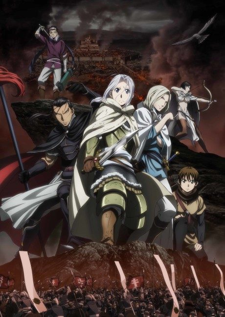
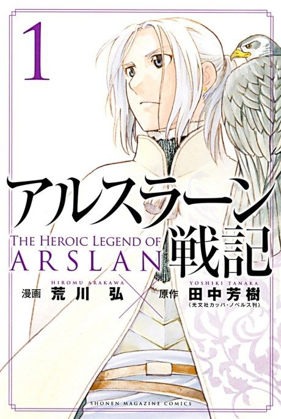
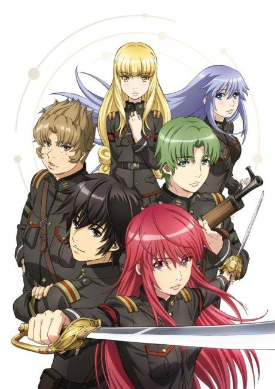
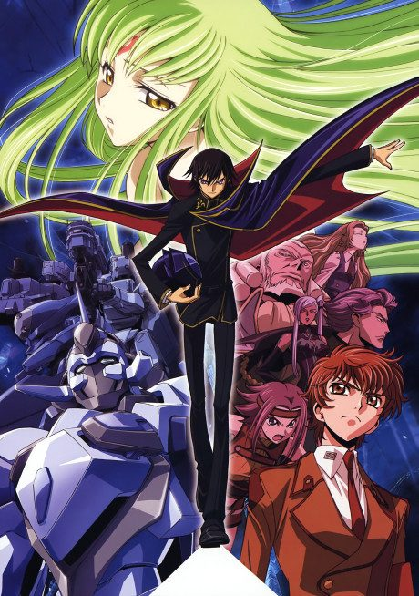
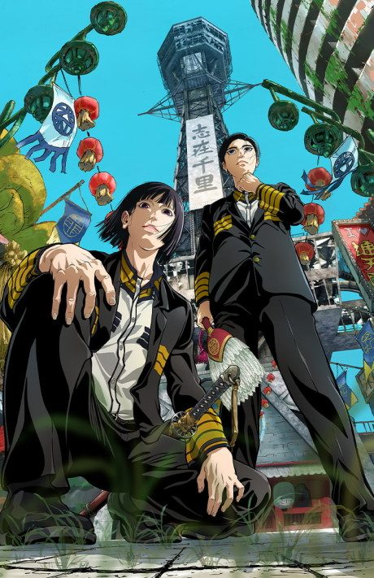
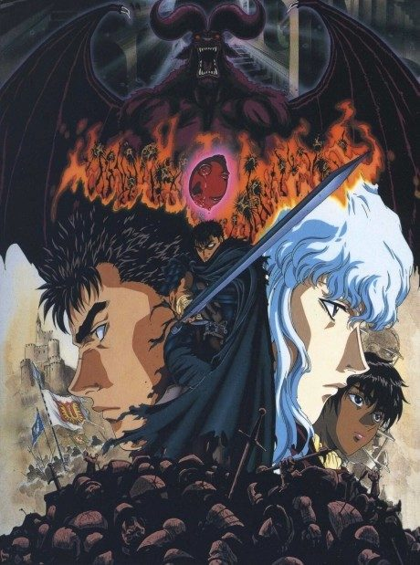

Anime
Manga2015 · Action, Adventure, Drama
The Heroic Legend of Arslan
アルスラーン戦記 (TV)
AniList7.3
Animeter—
2 seasons33 ep
MangaUnclear
Is it worth pushing through?
Built from what visitors report across all 2 seasons (33 episodes).
Loading reports…Checking what other people said about this one.
Sign in with your email at the top of the page to add your report.
More like The Heroic Legend of Arslan





